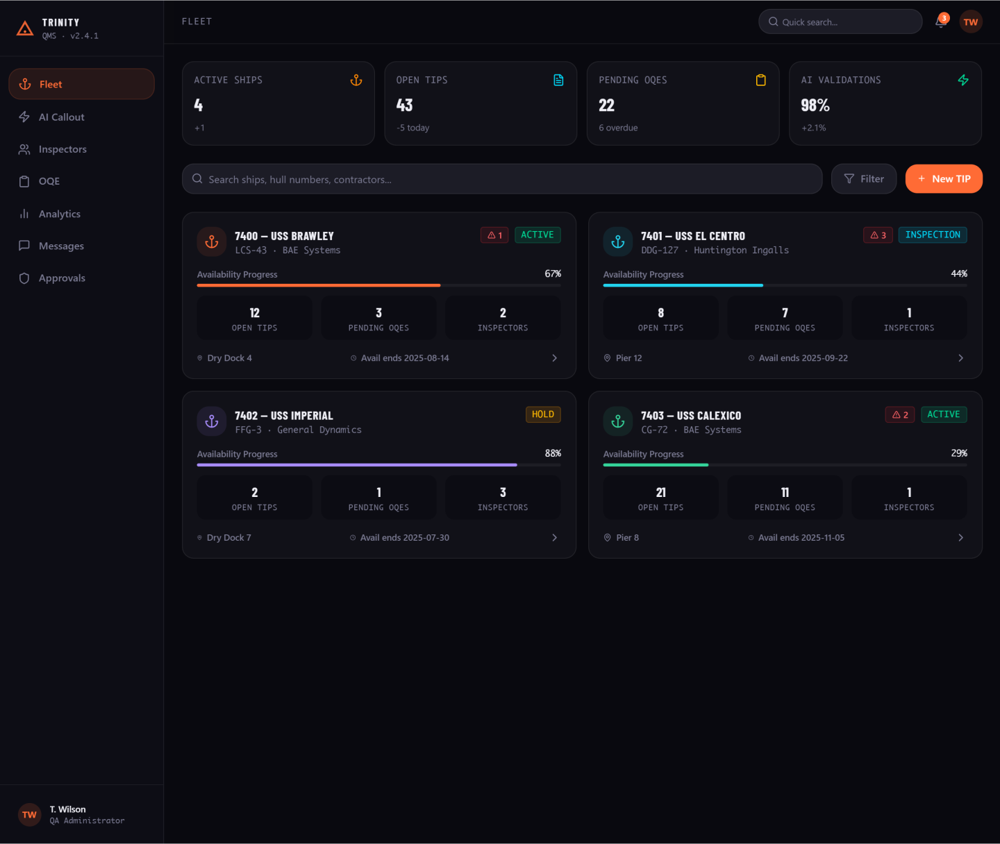
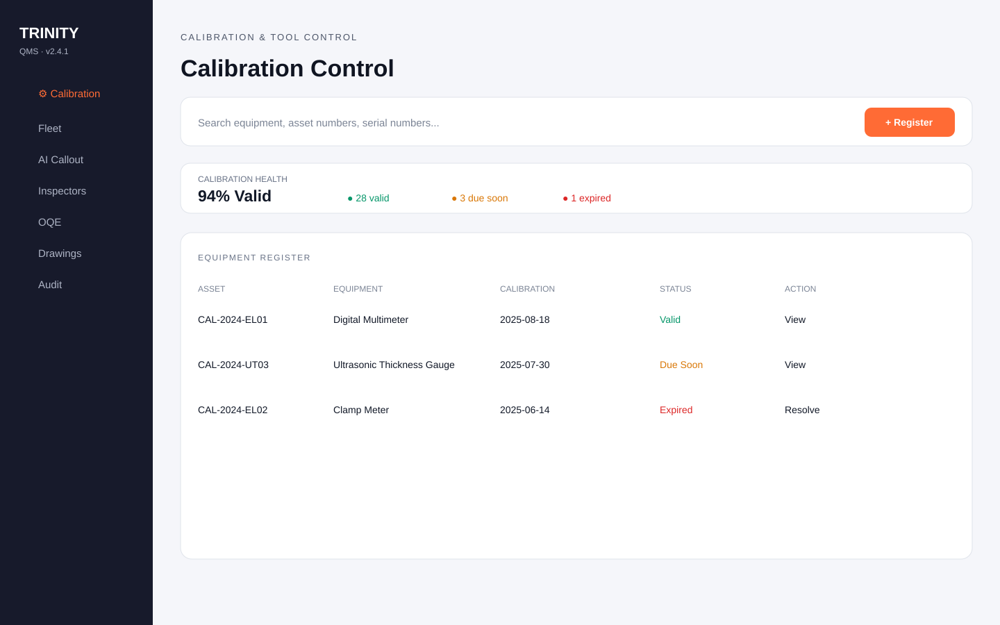
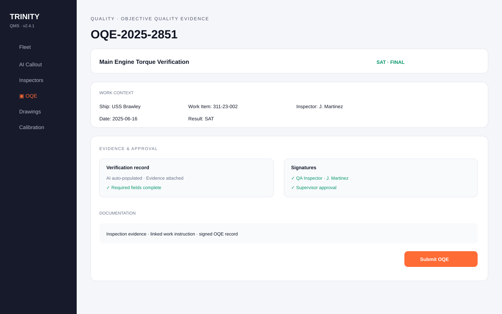

Trinity: making complex QA operations easier to navigate.
Trinity is a mobile-first AI-powered quality management system designed to centralize fragmented operational workflows, documentation, scheduling, reporting, personnel, and equipment information.

Fragmented work creates friction.
QA operations involve schedules, documentation, inspections, personnel qualifications, equipment, compliance, and reporting. Trinity was designed to bring those workflows into one connected product experience.
Use familiar interaction patterns and clear information hierarchy so users can find what they need quickly instead of navigating disconnected spreadsheets, documents, and manual processes.
Three workflows, one connected system.
Operational visibility across ships, availabilities, TIPs, OQEs, inspectors, and status.
Equipment identity, calibration health, registration, tool control, and checkout workflows.
Evidence, inspection records, work context, signatures, approvals, and final submission.
See the product beyond the dashboard.
The portfolio now shows three connected Trinity workflows so a recruiter can understand the breadth of the product before opening the interactive Figma prototype.


Reduce the administrative load.
Trinity incorporates AI and automation concepts for document processing, information retrieval, workflow generation, compliance checks, and repetitive administrative tasks.
A connected operating layer.
The product direction centralizes operational information and creates a consistent way to move from task → evidence → status → action.
Explore the broader Trinity product and interactions in the working Figma project.
View Trinity in Figma ↗← Back to selected work